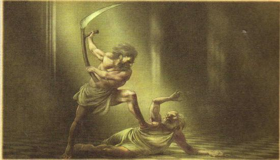

Mitologia Grega
As histórias dos maiores deuses

A Guerra dos Titãs

 Segundo a mitologia grega, a guerra aconteceu entre os deuses que eram liderados por Zeus e os titãs eram liderados por Cronos. era o mais novo dos 12 titãs filhos de Gaia e Urano vivia um medo constante de perder seu trono para seus filhos. Portanto, sempre que uma criança nascia ele os fazia voltar para o útero da mãe novamente. Entretanto, Gaia se cansou do posicionamento do marido e instigou os filhos para se revoltarem. Contudo, apenas Cronos teve coragem de se rebelar contra o pai. Então ele conseguiu sair do útero da mãe, no momento em que os pais estavam juntos, e com uma foice castrou o próprio pai.
O princípio da história
Por fim, Cronos consegue libertar todos os seus irmãos que estavam presos no útero da mãe e acaba se casando com Réia, que era sua irmã. Mas antes. Urano havia profetizado anteriormente que, o filho que o destronasse sofreria o mesmo destino. Ou seja, Cronos também seria destronado por um de seus filhos, repetindo a história do pai. E de uma forma um tanto quanto hipócrita a previsão do futuro fez com que Cronos também temesse seus filhos. Portanto ele devorava todos assim que nascessem.
O começo e o fim da Titanomaquia
Então Réia, assim como Gaia, passou a entregar todos os filhos nascidos para Cronos comer. Apenas Zeus escapou. O último filho foi trocado pela mãe por uma pedra. Cronos engoliu sem perceber. Enfim, Zeus passou a ser criado por ninfas para que sobrevivesse sem que o pai soubesse de sua existência. Posteriormente, mais velho, Zeus se disfarça e consegue fazer com que o pai beba uma poção e vomite todos os filhos que foram engolidos antes, porém adultos. É neste momento que a Titanomaquia se inicia. Com o apoio de todos os irmãos, agora livres, Zeus declara guerra contra Cronos. Uma batalha que chegou a durar longos 10 anos. Na guerra entre deuses e titãs, os primeiros se localizavam no monte Olimpo, enquanto os outros estavam no monte Ótris. Zeus começa a batalha de deuses com a ajuda de ciclopes, Zeus conseguiu várias armas. Foi uma luta que fez o céu e a terra se unir em algo único. Como se fosse uma grande mistura com a terra sendo esmagada e o céu descendo em direção a ela. A luta continua até que Zeus solta um raio do alto do Olimpo que faz com que toda a terra trema. Por fim era possível ver gigantes hecatônquiros lutando pelos deuses e arremessando montanhas contra os titãs. Enquanto isso estes resistiam com todas as suas forças contra a fúria dos deuses. A guerra entre deuses e titãs se encerra e Zeus é, finalmente, nomeado o rei do universo. Além disso, todos os deuses entram em acordo e banem os titãs de forma definitiva para o tártaro.
Os 12 Deuses olímpicos
Todos viviam no topo do Monte Olimpo e por isso, recebem esse nome. São eles: Zeus, Hera, Poseidon, Atena, Ares, Deméter, Apolo, Ártemis, Hefesto, Afrodite, Hermes e Dionísio.

Os deuses do Olimpo são considerados as principais divindades gregas. Ali, eles moravam juntos num imenso palácio e tinham alguns deuses que os serviam. Os alimentos que consumiam, os quais eram considerados divinos.
A guerra de Troia

Um jogo de xadrez entre deuses mitológicos teve como pano de fundo um campo de batalha que reuniu frente a frente dois exércitos formados por homens e heróis. O motivo? Uma paixão proibida.
Por muitos anos, era consenso de que a cidade de Troia existia apenas na mitologia. Troia histórica está localizada na península da Anatólia, na Turquia, a sudoeste do Monte Ida.
O estopim do conflito armado foi o sequestro de Helena, esposa do rei espartano Menelau, por Páris, príncipe de Troia. Diz a lenda que ela era tão bonita, que o irmão de Menelau, Agamemnon, rei de Micenas, juntou suas tropas para invadir as muralhas de Troia e tentar resgatá-la.
Segundo a literatura antiga, a Guerra de Troia começou na verdade por causa de uma birra entre os deuses do Olimpo. Éris, a deusa da discórdia, ofereceu um pomo de ouro a Hera, Afrodite e Atena. A mais justa das três seria merecedora do objeto. Para decidir a questão, Zeus enviou as três a Páris, que escolheu Afrodite como a mais justa. Em troca, a deusa do amor fez com que Helena, a mulher mais bela do mundo, se apaixonasse por ele.

A Guerra de Troia colocou frente a frente deuses, heróis e homens. Do lado grego, além de Menelau e Agamêmnon, estavam os poderosos heróis Ulisses, Aquiles, Ajax e os Mirmidões, lendários soldados de Aquiles. Do alto do Olimpo, torciam pela vitória dos gregos Atena, Hefesto, Hera, Hermes, Tétis e Poseidon. Do lado troiano lutaram: Páris, seu irmão Heitor, Cassandra, Príamo e as Amazonas. O apoio divino veio de Afrodite, Apolo, Ares, Ártemis e Zeus.
Quem Venceu?
Uma guerra de dez anos entre dois exércitos formados por humanos e heróis não poderia terminar diferente. Quase todos os personagens principais morreram. O cerco foi rompido depois que os troianos decidiram aceitar o famoso presente de grego: um cavalo de madeira recheado de soldados inimigos que ficou conhecido como Cavalo de Troia.
A cidade foi destruída. Páris, Heitor e os principais campeões morreram em combate, assim como o melhor de todos, Aquiles, que recebeu uma flechada no calcanhar. Menelau levou Helena de volta para Esparta.